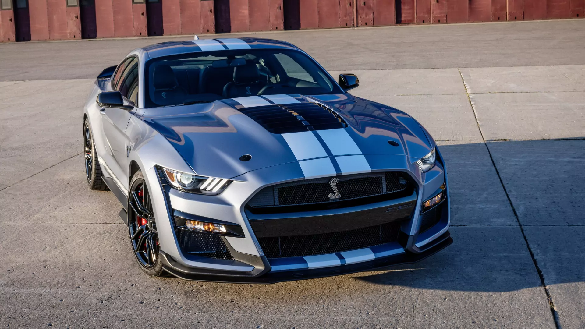

Com o lançamento do Ford Mustang de sexta geração, também surgiu um
novo Shelby GT500. O motor utilizado dessa
vez é uma versão sobrealimentada do motor do Shelby GT350;
- Opções de carroceria: Coupe 2 portas
- Opções de motorização: 5.2 V8 32V Supercharged DOHC- 770cv
- Binário: 86,5 kgm
- Aceleração: (0-100 km/h) 3.0 seg
- Caixa: Automática de 7 Velocidades de Dupla Embreagem
- Velocidade máxima: 320 km/h